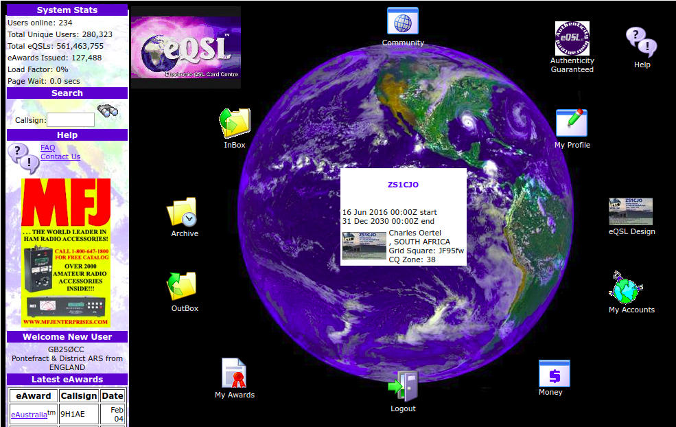

Intro to Electronic QSL
A crash course in getting started
by Charles Oertel (ZS1CJO)
Electronic QSL “card” Overview
- LoTW
- eQSL
- SARL
- ClubLog
LotW
Logbook of The World
http://www.arrl.org/logbook-of-the-world
Logbook of the World (LoTW) is an online service that enables you to
- electronically submit contacts (QSOs) for confirmation
- view your submitted QSOs and resulting confirmations online
- view your DXCC, VUCC, WAS, WAZ and WPX award progress online
- electronically submit confirmations for credit toward DXCC, VUCC, WAS, WAZ and WPX awards
eQSL
http://www.eqsl.cc

SARL
- For local contests, QSLs and Awards.
- For SARL members only.
- Current online logging mechanisms hand-built and not very robust.
ClubLog
- New to me.
- http://clublog.org
- Here is a video typical of any site that requires registration:
Electronic Logging Process
CTARC ILLW Logs
- During the ILLS Weekend QSOs are captured on paper.
- The paper logs are captured electronically to provide QSLs to international and local amateurs.
- Electronic logs are uploaded to:
- LoTW,
- eQSL,
- eQSL and the SARL.
Capturing the Logs
Paper logs often hard to read or interpret...
xLog
An open-source logging program. You can use any other program that allows exporting to ADIF and/or CSV.